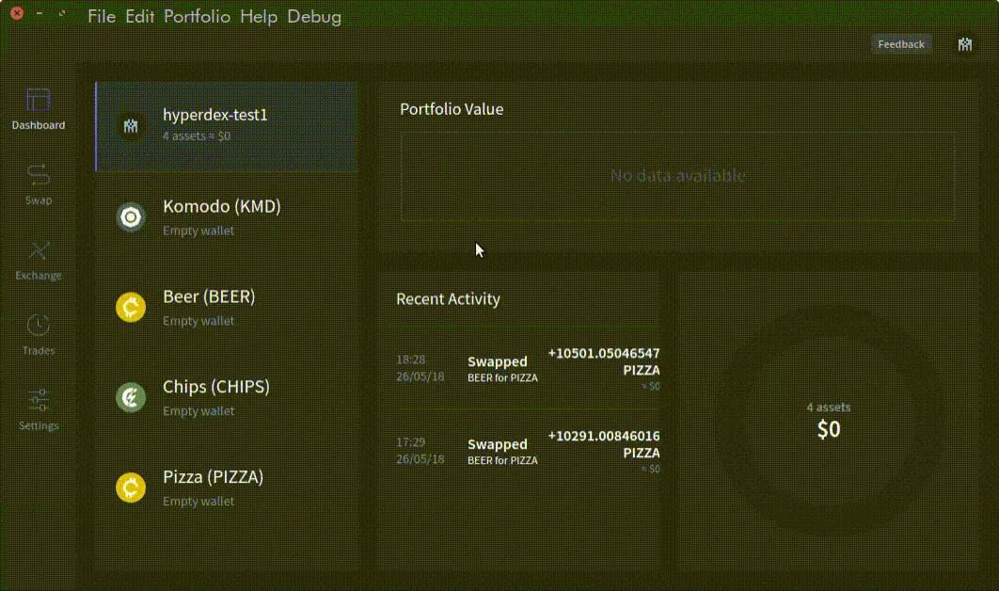

HyperDEX: Enable Currency
How to
- Start the HyperDEX app.
- Click on the Settings menu on the Left side (
LHS) of the screen.
- Click on the box in the middle with different currency names in it.
- Select the coins/list coins/tokens/assets you wish to trade in from the drop-down menu.
The process can be seen in the gif below:
